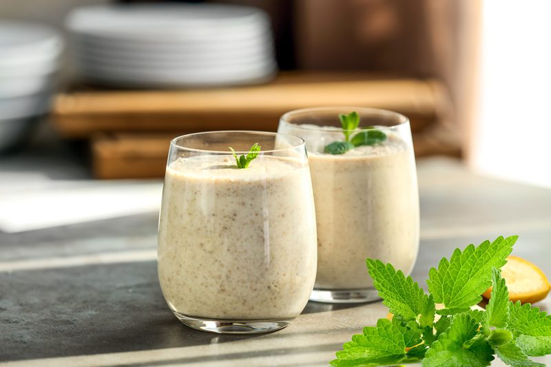

Peach and Mandarin Orange Julius
~ raw, vegan, gluten-free, nut-free ~
There are moments in life that you will never forget.
I was working at a local drugstore when I heard the entry door chime. I looked up to see a tall, thin, man wearing bibbed overalls. Not a common site where I lived. His skin was deeply tanned making his piercing blue eyes stand out even more.

He was carrying a wooden crate, but that wasn’t really what caught my attention… it was his overalls. They hung loosely on his slight frame and the pockets had been altered by what I can only guess was a loving wife. Each pocket had been replaced with red bandana-like fabric with a stretchable elastic band across the top. The overalls had two front pockets, a pocket on each side of his legs, two back pockets and a really large one on the chest piece of the bib. Each one was loaded, but with what I wasn’t quite sure. Now, take a moment to really lock that image into place. Proceed reading when ready. :)
Without so much as a single word… he approached the counter with just a warm smile and a nod. As he sat the crate down on the counter, I got a clear impression that he wasn’t there to pick up a prescription.
Reaching into his front pocket, he pulled out the most beautiful… PEACH! And placed it on the counter. It was as if he were a magician and had just pronounced…”Abracadabra, Nothing up my sleeve…” a paring knife mysteriously appeared in his hand. He picked up the peach and within seconds that peach was broken down into perfect bite-sized pieces, all displayed on a napkin in front of him. I had never seen anyone handle a knife with such grace and ease.

Everyone flocked to the counter like stink on a skunk. At first, we poised ourselves as young ladies, being all polite, insisting that the person next to us helped themselves first. That didn’t last long, and before we knew it we were elbowing each other out of the way like we had just hit the mother load of all sales at the Macy’s Department store!
I looked at the man, then at the crate and all I could say was, “How much?” I don’t recall ever opening my purse to get the money, but I must have because no sooner had he come in, he disappeared, and I had a crate of nine peaches in my arms.
To be honest, I just wanted to run into a dark corner and devour them all by myself. I had never eaten a peach that was so luscious, but, there stood my co-workers, each with the eyes of a crazed person and peach juice streaming down their chins…. one by one I handed out my peaches, leaving myself ONE.
I leaned over the counter and took a bite. It was so big I had to cradle it in the palm of both hands. The whole encounter almost felt slightly sinful. The peach was gloriously sweet, juicy and syrupy. Bite after bite; its juices dribbled down my chin and across my hand. I found myself licking my fingers, shamelessly, hoping to savor every drop of the glorious essence. It was, how else can I put it but… euphoric! That peach changed my life.
Many people feel that we are entitled only to one great love in life. This whole experience had me questioning, ” Is this my one true love experience with a peach?” Will I ever encounter another peach like it? I bet more than a decade slipped by before I ever found a peach that matched up to that experience. And today’s peach showed me that there is more love on this planet than we realize. *wipes peach juice from her chin*
Life is Peachy!
I hope you enjoy my take on this Orange Julius Drink that is based on the fresh taste of peaches. To make it as scrumptious as it can possibly be… start with the best quality of organic peaches and oranges. Test for freshness, ripeness, and sweetness. To help support the overall flavor, I highly recommend that you use the seeds from fresh vanilla beans. It will add a nice depth of rich flavor without a chemical (alcohol) aftertaste. Keep me posted if you give this recipe a try. Blessings, amie sue
Ingredients:
Yields 8 cups
- 4 cups water
- 2 cups (410 g) coarsely chopped peaches
- 2 Tbsp raw honey, or another sweetener
- 1 cup fresh orange or Mandarin juice
- 1 cup young Thai coconut flesh, see option below
- 1 vanilla bean, seeds only
- 1 peach cut into 8 wedges, for garnish
Preparation:
- In a blender combine the water and peaches. Blend until the peaches are thoroughly broken down into a slurry.
- Place a nut bag in a large bowl and pour the peach slurry through the bag. Hand squeeze all the liquid from the bag. The skins and any large pulp will be left behind.
- Rinse the blender and pour the peach slurry back in along with the orange juice, coconut flesh, honey, and vanilla bean seeds. Blend on high for about 60 seconds.
- If you are not able to find young Thai coconut meat, you can use the firm coconut cream from 1 can of full-fat coconut milk.
- To use get the seeds out of the vanilla bean, simply grab a cutting board and sharp knife. Cut each end off the vanilla bean. Next, slice the through the vanilla bean lengthwise. Now that the bean is cut into halves it is time to remove the paste (seeds) from inside the bean. Hold your knife perpendicular to the bean and scrape. It is that easy!
- Pour into a pitcher and place in the fridge for several hours to chill.
- Serve over ice and garnish the edge of the glass with a peach wedge.
© AmieSue.com